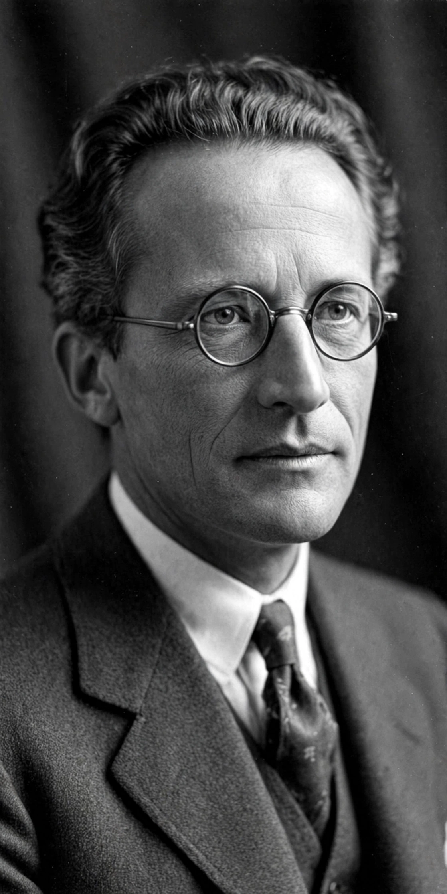

[Image placeholder: Erwin Schrödinger, who formulated the equation in 1926]The **Schrödinger equation** is a linear partial differential equation that governs the wave function of a non-relativistic quantum-mechanical system. Its discovery by the Austrian physicist Erwin Schrödinger in 1926 was a landmark in the development of Quantum mechanics.
In its time-dependent form, iħ ∂Ψ/∂t = ĤΨ, the equation says that the wave function Ψ evolves in time under the action of the Hamiltonian operator Ĥ, which encodes the system's total energy. The time-independent form, Ĥψ = Eψ, is used to find stationary states and energy levels, such as the spectrum of the Hydrogen atom. Solutions of the equation — for example for the Particle in a box and the Quantum harmonic oscillator — reproduce the quantised energies observed in atomic physics.
Schrödinger built on de Broglie's hypothesis that matter has wave properties, seeking a wave equation analogous to those of optics. His equation gave the same predictions as Heisenberg's matrix mechanics (the two were soon shown equivalent) and became the usual working tool of quantum mechanics. Max Born's probabilistic interpretation treats |Ψ|² as a probability density.
The equation is non-relativistic; its relativistic generalisation is the Dirac equation for spin-1/2 particles, and the fully relativistic framework is quantum field theory. In the limit of large quantum numbers the equation's predictions approach classical mechanics, in line with the correspondence principle.